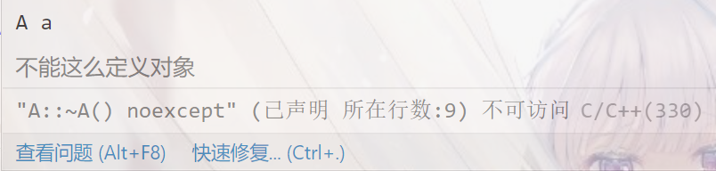

Cpp高级程序设计

导论
语言
语言是在一定的符号集合中按一定的规则组织起来的符号串集合，由语法(Syntax)、语义(Semantics)和语用(Pragmatics)构成
第一个编程语言是Fortran
编程范式
命令式编程
结构化编程/面向过程编程(Procedural)
例如C语言，基于过程化调用的概念
面向对象编程(Object-Oriented)
基于现实场景的交互模型
描述式编程
只描述需求，不需要清楚其中的执行过程
函数式编程(Functional)
程序的结果仅由参数决定，不受运行环境影响，即函数不能有副作用，具有利于并发的优势
逻辑式编程(Logical)
根据规则和事实进行推理
结构化程序设计
自顶向下，逐步求精
包含顺序，分支与循环三种结构，由数据结构与算法组成
数据
由名、值、地址、类型、性质组成
地址
全局变量存储在静态变量区；局部变量存储在栈区；使用new和malloc分配的变量则存储在堆区
类型
类型定义了取值集合（溢出问题需要自行处理）以及与同类型数据之间的计算（包含算术、逻辑与输入输出运算），可自定义ADT抽象数据类型；类型系统可以分为强类型系统（运算必须在规则体制下进行）和弱类型系统（运算只要能理解即可）以及静态系统（在编译时确定数据类型, Compiler）和动态系统（在运行时才能确定数据类型，实现了多态, Linker）
程序移植性问题
typedef int INT16;
//16位计算机
typedef short INT16;
//32位计算机
//在位数不同的计算机上运行相关程序时只需要修改一句代码即可
基本数据类型
char, int, float, double搭配四种修饰符long, short, signed, unsigned
其中char只能被signed和unsigned修饰；float不能被修饰；double只能被long修饰；int可以被四种修饰符修饰
typedef能够为已有的类型定义一个同义词，即别名，没有创建新类型
表达式
由操作数，操作符和其他符号（例如括号）组成；其求值依赖于优先级、结合性（左结合/右结合）、类型转换约定（不同类型的数据一起运算时）、求值顺序（由编译器决定，应该尽可能降低表达式的副作用，即少使用自增与自减，因为编译器会优化掉表达式的副作用，但优化方式由编译器自己决定，所以可能出现UB）
表达式的种类可以分为算术（前增量++a的结果是左值，后增量a++的结果是右值）、关系与逻辑（三目运算符?，只计算一个运算分量，当且仅当两个条件分量均是左值时，该表达式成为左值表达式，例如x > 0 ? y : z = 8）、赋值（左值=右值，左值不一定是变量，只要具有存放数据的确定地址即可；右值表达式计算完毕后，如果和左值类型不同，则会先进行类型转换）、逗号（罗列多个表达式，只有最后一个表达式作为该表达式的值，左右值类型同样取决于最后一个表达式，例如d = (a = 1, b = a + 2, c = b + 3)运算的结果是6）、字位运算符表达式（即位运算，包含按位取反~，按位与&，按位或|，异或^，移位运算<<和>>）和常量表达式（const double num = f(1)，注意遵循use const whenever possible的原则，给常量赋值的函数需要无副作用，因为常量的取值需要在编译时即可确定）
//使用异或运算交换两个变量的值
a = a ^ b;
b = b ^ a;
a = a ^ b;
//推导思路：a' = a ^ b; b' = b ^ a' = b ^ a ^ b = b ^ b ^ a = a; a' = a' ^ a = a ^ a ^ b = b;
语句
表达式语句（表达式+分号），IO语句（cin和cout，本身只能对基础数据类型进行操作，但重载后可以支持自定义类型），控制流语句（顺序、选择、重复）
switch语句采用了表驱动，只需要一次跳转，而不需要if/else的多轮比较，但是只能针对整型数据类型使用（int/short/long），每一段语句后都需要break除非共享语句，在一些情况下为了避免字面常量的出现也会结合枚举类型进行使用
enum color{RED = 2, GREEN = 8, BLUE = 66};
int color;
switch(color){
case RED:
//...
break;
case GREEN:
//...
break;
default:
//...
}
表驱动：switch将代码地址保存在跳转表中（由于数据类型是整型，所以对每一个取值留出一个地址空间即可，但为了节省空间，常常会先减去case中的最小取值），接下来就可以直接使用访问数组的方式以O(1)的复杂度找到跳转位置，即使用空间换取时间效率。但对于case不多，但取值上下界差异很大的情况，使用这种方式会非常消耗空间，这时会转而使用平衡树的方式查找取值，在保证一定效率（O(logn)）的同时降低内存消耗
函数
函数是为了模块化而存在的，在使用时通过符号表查找相应代码段的地址，如果引用现有库则会在编译后的链接过程生成调用库中对应的变量和函数的符号表。对于模块化而言，代码的基本单位是函数，如果从函数的中部而非首部开始运行则会出现问题。但为了支持函数嵌套调用的特性，调用函数时需要占用栈空间，这是模块化所需要付出的代价
原则：不能嵌套定义函数，即函数内部不能定义函数；先定义再使用
执行机制：先建立被调用函数的栈空间，然后按照标准从右向左（因为栈空间向下生长）传递参数（值传递和引用传递），接下来保存调用函数的运行状态，将控制权转交被调用函数，执行被调用函数，执行完毕后还原调用函数的运行时环境，继续执行调用函数
//值传递
int function(int a, int b){
return a + b;
}
//值传递（指针也是值传递，因为地址也是值）
int function(int *a){
return a[2];
}
//引用传递
void function(int &a){
a = 1;
//修改对调用函数的运行环境有效
}
调用方式
__attribute__(stdcall)
//标准函数调用方式
int function(int a, int b);
__attribute__(fastcall)
//函数快速调用方式，允许使用两个寄存器来存储参数，以更快地进行运算，但更多参数与stdcall处理方式一致
int function(int a, int b);
声明（函数原型）
int function(int x);
int main(){
int a;
function(a);
}
int function(int x){
cout<<x;
}
利用声明可以自有安排函数定义的位置，编译器只需要根据声明（函数类型必须相同）就可以编译出正确的代码，但如果声明与定义的参数类型不同则在链接过程不一定能找到对应的函数
重载
不同的函数可以使用相同的名称，但可以需要不同的参数，其中返回值类型不是区别重载函数的依据，提供了一名多用的多态。相应的在链接函数时需要一套匹配原则：先严格匹配（即参数类型必须完全一致），如果无法严格匹配则尝试内部转换（即类型转换）后匹配，如果依然无法匹配则尝试用户定义的转换。在使用该原则时应注意避免二义性的产生，例如
void function(long x);
void function(double x);
int main(){
function(10);//可以同等优先级地匹配到上面两个函数
return 0;
}
默认参数
当调用函数时未传入某个参数则使用默认值，在声明时给出即可，定义时不用重复给出，例如
int function(int a = 1, int b = 2, int c = 3);
int main(){
function();
return 0;
}
int function(int a, int b, int c){
cout<<a<<" "<<b<<" "<<c;
}
同样需要注意避免函数重载时的二义性，例如
void function(int a);
void function(int a, int b = 2);
int main(){
function(10);
return 0;
}
内联
使用关键字inline申请将函数内联，编译器分析代码后如果认为内联可行就会将函数的调用处替换为函数内部代码，目的是在模块化提高可读性的同时避免函数压栈带来的效率损失；如果编译器认为内联不可行则会驳回内联申请，即无视inline关键字。其中递归函数和函数指针不可内联。内联的函数一般具有使用频率高、简单、规模小的特点。其缺点是会增长目标代码，导致病态换页和高速缓存命中率降低
多文件
作用域(Scope)
分为程序级、文件级、函数级和块级
//程序级（extern关键字），函数默认优先级，整个程序即跨文件可见
//test.h
#ifndef TEST_H
//防止重定义
#define TEST_H
#include<bits/stdc++.h>
extern const double pi = 3.14;
#endif
//test.cpp
include "test.h"
//include语句会将对应的文件内容复制到相应位置，因此不一定要是HeaderFile文件，但它是约定的头文件类型
//文件级（static关键字），仅当前文件可见，变量默认优先级，避免了多文件的重名问题
static const double pi = 3.1415926;
//函数级（函数内部变量），仅当前函数可见，函数栈帧出栈时生命周期结束
void function(){
int x = 1;
std::cout<<x;
}
//块级（块内部变量），仅当前代码块可见，代码块执行结束时生命周期结束
{
int i = 1;
std::cout<<i+2;
}
名空间(namespace)
替代static以约束变量和函数的作用域，更加简洁易懂
//名空间定义方式（类似于代码块）
namespace myCode{
int x;
void function(int i);
}
//声明式Declaration使用（用到的才使用）
using myCode::x;
using myCode::function;
int main(){
x = 2;
function(x);
}
//直接Directive使用（使用整个名空间）
using namespace myCode;
//std同理
int main(){
x = 2;
function(x);
}
//临时使用（临时使用，不想被占用名空间）
int main(){
myCode::x = 2;
myCode::function(x);
}
名空间的更多使用：
//名空间别名
namespace mc = myCode;
//全局名空间
#include<bits/stdc++.h>
int x;
namespace myCode{
int x;
void function(int i);
}
int main(){
myCode::x = 2;
//全局变量，省略::效果一致
::x = 3;
std::cout<<x<<" "<<myCode::x;
return 0;
}
//嵌套名空间
namespace L1{
int a;
namespace L2{
int function();
}
}
int main(){
//嵌套调用
std::cout<<L1::a<<std::endl<<L1::L2::function();
}
//同名的名空间会被编译器自动收拢
namespace myCode{
//...
}
namespace myCode{
//......
}
不建议在同一作用域下两次使用using-directive，容易引进冲突
宏（编译预处理）
宏是潜伏于环境，能穿透作用域的语句，一定程度上替代了extern关键字的使用。其本质是替换，应用方式非常丰富，例如#define VERSION1 1024等，便于程序的组织
数组类
数组
数组的特征是相同类型数据的连续存储
指针接口
指针是指向某个地址的变量，本质上是地址，而地址单元中存储的是数据，因此可以利用指针进行二进制数据级别的类型转换
void *指针：两种不同指针之间不能相互赋值，但是任何一种类型的指针都可以赋值给void *类型的指针，它是所有类型的指针的公共接口，由于不清楚数据的解析方式，void *类型的指针不能执行取址操作，只负责记录地址的信息，给指针类型参数的传递提供了灵活性
多维数组
多维数组在内存的排布（实现）上本质与一维数组一致，只是提供了更灵活更符合设计考量的访问方式，因此参数传递时只能缺省第一维，例如void f(int a[][2], int n)，同时也可以将多维数组的某一维视为一个数据类型，例如：
//一般的写法
int A[105][105];
//将数组维度视为数据类型
using T = int[105];
由第二种方式可以看出，二维数组可以看成连续排布的一维数组，由于C++并不限制越界访问（只要访问权限不出错），导致可以通过升/降维的方式访问数组
降维：a[i][2]（第二维定义时为5，体现了为何传入参数时只能缺省第一维度）等价于a[i*5 + 2]，因此可以通过传入a[0]的指针，然后提供偏移量的方式来访问多维数组
升维：应用相对较少，即降维的逆过程，例如：
#include<bits/stdc++.h>
using namespace std;
void print(int a[][2], int n){
for(int i = 0; i < n; i++){
for(int j = 0; j < 2; j++){
cout<<a[i][j]<<" ";
}cout<<endl;
}
cout<<endl;
}
int main(){
int b[12];
for(int i = 0; i < 12; i++){
b[i] = i + 1;
}
typedef int T[2];
print((T *)b, 6);
return 0;
}
动态内存管理
$RAII:Resource~Acquisition~Is~Initialization$，资源获取即初始化
申请内存
malloc：返回值类型为void *，参数为需要的内存空间大小，由于不确定目标指针的类型，因此传回void *，并且不能进行初始化
new：返回类型为对应类型的指针，会自动完成初始化并调用构造函数
申请内存时都需要优先判断内存分配后得到的指针是否为空，即有效性判定
归还内存
当申请的内存使用完毕后就需要归还内存，否则会导致内存泄漏。为了便于确定需要归还的内存空间大小，每一块动态分配的内存空间都会在其首部多携带一块空间存储其占用的内存空间大小。因此申请内存的指针需要保留（移动时需要存储副本），否则归还内存时会出错
free：函数式归还内存，与malloc对应，将需要归还内存的变量指针传入参数即可
delete：操作符式归还内存，逐个调用对象的析构函数。如果申请的是单个对象，则只需要使用delete；如果申请的是数组类型，则需要用delete[]对应
结构体
需要注意结构体的内存存储需要对齐操作，例如如果设置为4字节对齐
struct myStruct{
char b; //1 byte
int a; //4 byte
short c; //2 byte
};
//由于4字节对齐，char与int无法对齐4字节，char的内存占用上升到4字节；同理short需要补齐到4字节
cout<<sizeof(myStruct);//输出为12
//如果改变排布顺序
struct myStruct{
char b;
short c;
int a;
};
cout<<sizeof(myStruct);//输出为8
共用体
共享内存空间，如果两个变量的生命周期不交叉即可使用union以节省内存资源，其占用内存资源是共享域中内存占用的最大值
enum FIGURE_TYPE{LINE, RECTANGLE, ELLIPSE};
struct Line{
FIGURE_TYPE t;
int x1, y1, x2, y2;
};
struct Ellipse{
FIGURE_TYPE t;
int x, y, r;
};
struct Rectangle{
FIGURE_TYPE t;
int lef, top, rig, bot;
};
union FIGURE{
FIGURE_TYPE t;
Line line;
Rectangle rect;
Ellipse ellipse;
};
FIGURE figures[105];
void input(Figure* fig, int size){
int t;
for(int i = 0; i < size; i++){
cin>>t;
switch(t){
case LINE:
fig[i].type = LINE;
cin>>...;
break;
...
}
}
}
int main(){
input(figures, 100);
for(int i = 0; i < 100; i++){
draw(figures[i]);
}
return 0;
}
| line.t | rect.t | ellipse.t | t |
|---|---|---|---|
| line.x1 | rect.lef | ellipse.x | |
| line.y1 | rect.top | ellipse.y | |
| line.x2 | rect.rig | ellipse.y | |
| line.y2 | rect.bot |
如上表所示，Union中内部的子类型共享空间，在结构化编程中提供了实现多态的方法，可以将其理解为需要将继承自父类的变量重写且需要保持固定顺序的面向对象编程
指针
指针负责管理地址信息，进一步说可以负责读写数据和调用代码
常量指针：例如const int *或int const *，表示指针对指向的数据仅可读（即const int类型的指针，变量指针一般不可以指向常量，常量指针可以指向变量），只要指针不会更改指向的内容就应该使用const修饰它，因为这样在函数调用时保证了不会对运行环境做出改变，可以提高传参效率
如果将变量指针指向了常量，对其进行修改：
#include<bits/stdc++.h>
using namespace std;
int main(){
const int c = 128;
int *q = const_cast<int *>(&c);
//将变量指针指向常量
*q = 111;
cout<<c<<endl<<*q;
//输出是128和111，原因是通过指针成功修改了常量，但对于常量c，编译器直接用128替换了c在代码中的位置
return 0;
}
指针常量：例如int * const，表示指针指向一个不变的地址单元（即不可修改的int *），该指针可以读写对应地址单元，但不能指向其他变量
指针数组：指数组中的元素是指针，例如char *s[10]，int main(int argc, char *argv[], char *env[])
指针与结构体：结构体指针的成员变量访问方式，(*p).x等价于p->x，结构体成员变量的访问控制默认为public，一般都使用结构体指针传输结构体，否则会导致大块数据的传输影响效率，同时对结构体数据的更改会在还原运行时环境时丢失
指针与函数：由于指针占用的空间相对固定且容量小，所以一般用指针作为形参传递，同时可以使函数对运行时环境做出更改（具备副作用），如果不想做出改变也可以调用常量指针
函数指针：指向函数的指针，通过typedef int (*FP)(int, int)的语法即可将一个返回类型为int，参数类型为int, int的函数指针命名为FP，接下来就可以定义FP op[2] = {add, minus}来将指针指向add函数和minus函数，结合enum就可以实现多态的函数调用。
回调函数：通过将函数指针作为函数参数传入，然后由被调用函数调用相应的函数以完成自己的功能，被“被调用函数”通过函数指针调用的函数称为回调函数(Callback)，一般排序函数会传入自定义比较方法结合void *指针作为回调函数。
多级指针：指向指针的指针，例如通过函数交换两个变量的值
引用：为一块已有的内存空间取的别名，具备以下要求：
- 引用变量和被引用变量必须是同类型
- 引用变量由&定义，不是取地址符
- 定义引用变量时需要初始化
常用于函数传参或返回值以及动态变量的命名，但是需要注意函数返回引用时不能返回局部变量的引用，因为函数生命周期结束时其内存就已被归还，手动归还堆中变量引用空间的方式是
int *p = new int(100);
int &x = *(p + 1);
delete &x;
常值引用：即const int&类型的变量，引用的变量在定义的时候其值就被确定，不可被更改
面向对象程序设计
封装
多文件
类的成员函数在头文件中声明，在源文件中定义；直接在头文件中定义成员函数相当于内联
//头文件
class myClass{
int a;
int f(int x);
};
//源文件
int myClass::f(int x){
return x + 1;
}
对象变量性质
//直接定义，已经具有了一块内存空间，位于静态区（全局变量）或栈区（局部变量）
myClass c;
//动态申请，位于堆区
myClass *p = new myClass;
构造函数
构造函数的作用是：为创建对象建立标识、为对象开辟内存空间和按标准进行初始化。因此在构造函数执行结束之前，对象占用的内存空间是不确定的。其特点有：与类同名，无返回类型；创建对象时自动调用，不可手动调用；可重载。如果不定义则使用默认构造函数，由编译系统提供，不进行对象成员数据的初始化
可以将构造函数声明为private避免其他代码创建对象，从而达到更好地管理内存资源的目的
class A{
public:
A();
//重载构造函数
A(int i);
A(char *p);
};
A a1 = A();//除了存储区域等价于A a1，但注意不能写成A a1()
A a2 = A(2);//等价于A a2(2)和A a2 = 2，后者的原因是当赋值可以匹配到构造函数时可以自动调用
A a3 = A("abcd");//同理
成员初始化表
作为构造函数的补充，先于构造函数体执行（即在内存空间申请结束之后就执行），无视其本身的编写顺序，而是按照类的成员变量的声明顺序用给定值初始化相应的变量。所有成员变量的初始化都推荐使用成员初始化表进行初始化，只有static常量可以通过直接赋值初始化。
class A{
int size;
char *p;
//前面的两个成员变量不能交换次序，否则在初始化p时size还没有进行初始化
int num;
public:
A(int x):p(new char[size]), size(100), num(0){
num = x;
//此过程为赋值而非初始化
}
}
成员初始化表也支持嵌套调用，例如
class B{
A a;
public:
//调用类A的构造函数
B(int m):a(m){
//......
}
};
在构造函数中应该尽可能使用成员初始化表代替内部的赋值操作，因为内部的赋值会被分为申请内存和赋值两个操作降低效率，其中尤其是**成员常量（常数值确定），引用成员（指针变量指向确定且声明在它之前的成员），对象成员（同步调用构造函数）**适合使用成员初始化表，但当数据成员过多时，出于可维护性考虑不采用该准则
析构函数
存在意义
$Garbage~Collection,GC$即垃圾回收机制由系统调用，出于其调用时机的不确定性导致效率的瓶颈以及只适用于管理内存和实时性较低的限制，C++采用RAII的机制，因此内存的管理和回收可以由程序员自行定义，析构函数的格式为~<类名>()，不能带有参数
对象消亡
当离开作用域时对象消亡，例如栈上的对象会在函数执行结束后消亡；全局静态变量会在程序结束后消亡；而堆上的对象则需要由程序员手动归还，不会自然消亡。当对象消亡时，系统会自动调用析构函数，析构函数的作用是释放对象持有的非（自身）内存资源
具体地说，栈上的对象会在离开其作用域之后自动并递归调用析构函数；而堆上的对象即使离开了其作用域也不会自动递归调用析构函数，而是在对应程序完全结束之后由操作系统回收内存，由于程序已经完全结束，故此时调用也无法看到析构函数内的输出，可以尝试下面的代码：
#include <iostream>
using namespace std;
class A{
public:
A():num(new int(0)){
cout<<"construct A!"<<endl;
}
A(const A &d):num(new int(*d.num)){
cout<<"copy construct A!"<<endl;
}
//添加移动构造函数
A(A &&d):num(d.num){
cout<<"move construct A!"<<endl;
d.num = NULL;
}
~A(){
cout<<"free A!"<<endl;
}
int *num;
};
class B{
public:
B(){
a = new A;
//A a;
cout<<"construct B!"<<endl;
}
~B(){
// delete a;
cout<<"free B!"<<endl;
}
A *a;
};
int main(){
B *b = new B;
delete b;
return 0;
}
自主控制对象存储分配
析构函数的访问控制默认为public，如果将其声明为private，则系统无法调用析构函数，就可以强制由程序员自己控制对象存储空间的分配
由于系统不能调用析构函数，考虑到栈空间有限的问题，析构函数声明为private的对象不能申请栈上的空间
class A{
public:
A();
//由于析构函数不可调用，因此需要提供类内部的方法回收内存
void destroy(){
delete this;
}
private:
~A();
};
int main(){
//不能这么定义对象
A a;
//但是可以这样定义
A *p = new A;
p->destroy();
}

但是这样的设计有一些奇怪，更好的解决方案是通过属于整个类的静态方法管理内存
static void free(A *p){
delete p;
}
特殊构造函数
系统默认或自定义的一般构造函数在大多数情况下能正常工作，但如果遇到需要用同类的对象进行初始化，并且类中具有指针或引用成员时，常规的构造函数的运行就会出现问题：如果直接将指针赋值给该对象，那么两个对象的指针会指向内存中的同一片区域，当某个对象将该指针释放掉后，另一个指针仍然指向相应的区域，形成悬挂指针，以下的两种构造函数给出了两种不同的解决方案
拷贝构造函数
拷贝构造函数是一类特殊的构造函数，在创建对象并用同类对象进行初始化时自动调用，常用的情景有：同类的对象的赋值，对象作为参数传递，对象作为返回值传递，拷贝构造函数的格式是<类名>(const <类名>& <变量名>)，需要注意的是拷贝构造函数的参数类型必须是引用，否则将对象作为参数传递时又会调用拷贝构造函数，造成拷贝构造函数的无限递归调用
默认拷贝构造函数
由系统提供，在拷贝构造函数缺省的情况下默认调用，逐个地对成员进行初始化，对于对象成员递归调用
重载拷贝构造函数
只有在需要进行深拷贝时才需要重载拷贝构造函数，深拷贝解决了悬挂指针的问题。具体的做法是在内存中额外申请一块相应大小的空间，将指针对应的值拷贝到新申请的内存中，这样就形成了两个不同的指针指向不同的空间，但空间存储的值是一样的
但是需要注意的是，一旦重载拷贝构造函数，编译器就不会再提供任何默认构造函数（程序员一旦接管相关事项，编译器就不会再进行任何相关操作），如果对相应的构造函数有需要则需要自己额外定义
在拷贝的过程中，如果被拷贝对象的对象成员尚未初始化，则会调用相应类的构造函数进行初始化
class B{
int z;
char *s;
public:
B(){ z = 0; }
B(const B& b):z(b.z){
s = new char[strlen(b.s) + 5];
memcpy(s, b.s);
}
};
移动构造函数
移动构造函数则是为了解决在一些情况下对象赋值时不必要的拷贝问题，而只需要将被拷贝对象的控制权移交给目标对象即可。区别于拷贝构造的左值引用A&，移动构造的参数使用右值引用A&&，即指向存储变量值地址空间的引用（引用左值的引用[左值引用是右值]）。持有该引用就可以直接修改对应区域的值，即拥有了相应对象的控制权。
#include <iostream>
using namespace std;
class demo{
public:
demo():num(new int(0)){
cout<<"construct!"<<endl;
}
demo(const demo &d):num(new int(*d.num)){
cout<<"copy construct!"<<endl;
}
//添加移动构造函数
demo(demo &&d):num(d.num){
cout<<"move construct!"<<endl;
d.num = NULL;
}
~demo(){
}
private:
int *num;
};
demo get_demo(int n){
demo a = demo();
if(n >= 1)
return demo();
else return a;
}
int main(){
demo b = get_demo(0);
demo c = b;
return 0;
}
在将控制权移交的同时，将原对象的指针置空，从而防止了两个指针指向同一片内存可能带来的问题，上面的代码示范了调用移动构造和拷贝构造的情况，输出为：construct! move construct! copy construct!注意函数中的条件分支如果去掉则移动构造会被编译器优化掉而不输出
左值与右值
左值是赋值操作符左边的值，一般是变量；右值是赋值运算符右边的值，通常是常数，表达式或函数调用。左值可以绑定到非常量的引用上；而右值则不行，只能绑定到常量引用上，不可通过该引用修改变量的值
int &y = x;
const int &z = 5;
动态内存管理
即在堆上存储的变量和对象
申请/释放方式
由于类的构造函数不能显式调用，而malloc不会调用类的构造函数，因此不能使用malloc/free来申请/释放对象内存；而new/delete则会自动调用类的构造函数与析构函数，它们既是关键字也是操作符（可重载）
new的执行过程
- 申请对应大小的内存空间
- 调用构造函数进行对象初始化
- 返回对象的地址
在堆上创建对象的同时既创建了一块对象内存，也创建了一个指向这块内存的指针，new同时也适用于基础数据类型，例如int *a = new int;在使用new进行初始化对象数组时必须要有默认构造函数，因为使用A *p = new A[100];的语法进行声明之后不能再进行显式初始化，申请对象数组后释放相应空间需要与delete[]配合使用，但下面的写法也是正确的
int *p = new int[100];
delete p;
因为基础数据类型的空间释放不需要调用析构函数，但都配合使用更好
delete的执行过程
- 调用析构函数
- 释放对象占用的内存空间
编译语言根据指针的变量类型决定调用哪个析构函数，在delete后注意要将指针指向NULL，防止悬挂指针的问题
动态多维数组
可以申请一个二级指针的数组用来记录各行的一级指针，但这样的方法由于会产生额外的内存开销，所以常常只申请一维动态数组，然后通过宏或者重载下标运算符来完成一维与多维之间的转化。如果申请了多维的动态数组，则需要一行一行地释放申请的内存
常成员
常成员变量
在对象中不修改其值的成员变量，由于const变量必须在定义的时候初始化，因此必须使用构造函数的成员初始化表进行初始化。常成员指的是初始化之后不修改值，不同的对象的同一常成员可以有不同的取值
class A{
const int x;
public:
A(int c):x(c){ }
};
常成员函数
常成员函数是在声明和定义时在参数列表后加上关键字const的成员函数，具备该关键字即是保证了该函数不会改变任意成员变量。如果声明和定义的const关键字不配套则不能通过编译，为了提升编译效率，C++检测声明与定义是否配套的机制是给所有常成员函数的参数中加入const A * const this，保证了this指针只指向当前对象且不改变对象成员的值，但是这个机制也存在漏洞：
class A{
int a;
int &indirect_int;
public:
A():indirect_int(*new int){}
~A(){delete &indirect_int;}
void f() const {
//成员是引用（指针），而非引用指向的具体值，因此可以通过编译
indirect_int++;
//但是如果将indirect_int初始化为&a，则不能通过编译
}
};
如果常成员函数中需要改变某些成员变量的值，则可以给这些成员变量的类型声明之前添加mutable关键字，允许对应的变量在常成员函数中被修改
静态成员
静态成员变量
静态成员提供了一个类的不同对象之间共享变量的机制，并且避免了全局变量的缺乏数据保护与名污染问题。因此静态成员变量是为所有类对象所共享的唯一拷贝，遵循类声明时的访问控制（访问控制只是在编译时静态检查，程序运行时没有访问控制）
class A{
int x, y;
static int shared;
};
int A::shared = 0;
静态成员的初始化只能在cpp文件中的类外进行（也不能写在头文件里，否则对于不同的程序要求可能导致重定义），否则每一个对象中都会有它的拷贝，与唯一拷贝相矛盾
而const static成员在类声明时初始化即可，编译器会将其视为符号常量
静态成员函数
静态成员函数是只能存取静态成员变量、调用静态成员函数，遵循类访问控制的函数
静态成员的调用
由于C++支持“类也是对象”的观点，既可以通过对象（A a; a.f();）也可以通过类（A::f();）进行调用
单例模式
单例模式的资源控制遵循“谁创建，谁归还”的原则，采用私有构造函数，但保留公开的静态入口
class S{
protected:
S(){}
S(const S &s);
public:
static S *instance(){
return m_instance == NULL ? m_instance = new S::m_instance;
}
static void destroy(){
delete m_instance;
m_instance = NULL;
}
private:
static S *m_instance;
};
S *S::m_instance = NULL;
友元
由于类的外部不能直接访问private成员而必须通过public方法间接访问，降低了访问效率和灵活性，因此C++提供了友元的机制解决这个问题，既提高了程序设计的灵活性，也在数据保护和数据存取效率之间取得了折中（即允许信任的函数直接访问私有成员）
void func();
//前置声明
class B;
class C{
void f(A &x);
//使用friend关键字声明友元
friend void hello();
};
class A{
//友元函数
friend void func();
//友元类
friend class B;
friend class D;
//友元类成员函数
friend void C::f();
};
class D{
void print();
};
友元函数是被声明friend的类所信任的全局函数，可以在类内部前置声明甚至给出完整定义，但它仍然不属于该类的成员，而是属于全局函数。但更建议遵循先声明后使用的原则
友元类成员函数是被声明friend的类所信任的另一个类的成员函数，在声明前必须先给出对应类的完整声明，否则会出现编译错误
友元类中的所有成员函数都受到声明friend的类的信任，在声明前可以不声明对应类，如果没有声明则友元的声明会被同时视为前置声明
从上面的代码中也可以看出成员函数的参数可以有尚未声明的类的对象引用或对象指针，这是因为虽然对应对象的内存空间占用尚不清楚，但引用或指针变量的内存占用是一定的
友元不具有传递性，即如果func是A的友元，A是B的友元，若无声明则func不是B的友元
设计原则
C++秉承的设计原则是将资源管理等交由程序员自己控制，以使得程序性能最优。具体的做法是尽量让接口完满且最小化，即只提供需要的，而不提供额外的
继承与多态
继承机制的存在主要是基于目标代码的复用（基类的代码有一部分适用于派生类），对事物进行分类和利于增量开发
单继承
访问控制与继承方式
C++中类的继承语法如下：
class A;
class B;
//不需要在前置声明中指明继承关系，但指明继承关系时被继承类必须要已完整声明
class A{
int id;
public:
char name[15];
void set_ID(int x);
void set_name(char *s);
void show_info();
};
//B继承自A
class B : public A{
int sad;
public:
//覆盖父类方法
void show_info();
private:
A::name;
void set_name();
};
其中访问控制包括public，private和protected，默认private继承，它会将所有的public成员的访问控制都更改为private，public继承则相反；protected继承表示派生类可以访问其内嵌的对应成员。
需要注意的是继承相当于将基类的成员变量内嵌到了派生类中，是属于派生类的成员，与基类的对应成员没有关系，因此派生类与其他类一样，不能直接访问基类的私有变量；如果想要更改基类成员变量的访问控制则需要按照上例名空间的方式进行。而派生类持有基类的成员函数指针，这样既实现了继承的功能也节省了代码空间。
派生类对象的初始化与析构
派生类对象的初始化由基类和派生类共同完成，其构造函数的调用次序为：
- 基类构造函数
- 派生类非指针/引用对象成员类的构造函数
- 派生类的构造函数
而析构函数的调用则相反
在调用基类构造函数时，缺省默认调用基类的默认构造函数，如果要调用其他构造函数，则需要在派生类构造函数的成员初始化表中指出
class A{
int x;
A(){
x = 0;
}
A(int i){
x = i;
}
};
class B : public A{
int y;
//调用默认构造函数
B(){
y = 0;
}
B(int i){
y = i;
}
//指明调用重载的构造函数
B(int i, int j):A(i){
y = j;
}
}
由于基类的构造函数先于派生类执行，因此必须要在开始构造，但还未开始执行构造函数代码的阶段指明要调用的基类构造函数，所以必须在成员初始化表中指明
如果要继承基类的构造函数，则可以使用语法using A::A;继承A的所有构造函数
引用有向性
派生类对象可以由基类指针引用；但基类不能由派生类指针引用。当派生类对象由基类指针引用时会产生对象切片，即多于基类的成员赋值会被略过，因此传值时因尽可能使用指针或引用
虚函数
C++为了效率考量，具体运行的函数地址选择均采用前期绑定(Early Binding)，即在编译时刻就通过对象指针的类型决定运行哪个函数，但这样的做法灵活性差，无法为多态提供支持，为此C++引入了虚函数的机制以实现动态绑定(Late Binding)，即将决定运行哪个函数延后到运行时根据引用实际指向对象的类型进行选择，需要程序员显式地通过virtual关键字将函数声明为虚函数。基类声明的虚函数在派生类中的继承也均为虚函数，虚函数有以下限制：
- 类的成员函数才可声明为虚函数
- 静态成员函数不能是虚函数（属于整个类，不需要多态）
- 内联成员函数不能是虚函数（编译时就需要进行内联的替换）
- 构造函数不能是虚函数（虚函数表是由构造函数创建的，并且构造函数不需要多态）
- 析构函数往往是虚函数
动态绑定是通过在对象的内存空间之前存储指向虚函数表地址指针来实现的，虚函数表中存储了对象中以及基类中的虚函数指针。因此直到构造函数执行完毕之前，对象都不能正常使用；所有函数都是事先编译好，动态绑定只是延迟选择执行函数的时机。在非虚函数中调用虚函数可以实现函数的虚化。
override关键字
继承自基类虚函数且需要实现多态的函数需要在函数后（与const同一个位置）跟上override关键字，并且函数的返回类型、函数名、参数、const标识必须完全一致，否则不可通过编译；如果没有声明override，只要上述类型完全一致，也视为派生类继承的虚函数，但编译器就不再为类型是否一致提供检查；如果基类中没有对应的虚函数，则不可声明override，否则不能通过编译
final关键字
和override在同一位置声明，如果基类声明了final则派生类不可重写该函数，也不能声明同名函数
纯虚函数和抽象类
在虚函数的声明原型后加上=0，即形如virtual void f() = 0的语法，即可将函数声明为纯虚函数，通常只给出函数的声明而不给出实现。
只要包含了一个虚函数的声明，该类就成为抽象类，抽象类不能用于创建对象，只是为派生类提供框架，用于创建对象的派生类必须补全所有纯虚函数的定义。由于其不能创建对象进而产生拷贝等问题，只能通过指针或引用进行传递，所以不存在对象切片的问题
虚析构函数
析构函数是用来释放对象额外申请的空间的，而不是用来归还它自身的内存空间的
析构函数往往声明为虚函数的原因是析构的过程中先执行派生类的析构函数，然后再执行基类的析构函数（因此重写时不需要释放基类成员的空间），通过基类指针引用派生类时，只有调用派生类的析构函数才有意义
虚函数设计原则
public的继承必须要确定派生类和基类之间存在is-a的关系，且派生类要能够替换父类，拥有父类的属性，执行父类中的方法。即在契约式编程中，基类需要具备最强的前置条件（能调用父类一定能调用子类）与最弱的后置条件（调用子类不出错则调用父类一定不出错）
同时，不能定义与继承而来的非虚成员函数同名的成员函数，否则缘于C++的机制，会出现同一个对象却出现不同的行为的古怪现象，例如：
class Mammal{
public:
//run at mammal way(mostly four-feet)
void run();
};
class Human : public Mammal{
public:
//run at human way(mostly two-feet)
void run();
};
Human me;
Mammal *mammal = &me;
//i run at mammal way
mammal->run();
Human *human = &me;
//i run at human way
human->run();
private的继承一般是为了满足：需要使用基类的protected成员和虚函数；不希望基类被非编程用户使用的情况，由于私有成员无法在类外被访问，因此基类指针引用私有继承的派生类对象后也无法调用其中的方法或访问其中的成员，没有多态的意义
三种函数的比较
| 纯虚函数 | 一般虚函数 | 非虚函数 |
|---|---|---|
| 只有函数接口被继承 | 继承接口和缺省的实现 | 继承接口和完整实现 |
| 子类必须继承函数接口 | 子类必须继承接口 | 子类必须继承接口 |
| 子类必须提供实现 | 子类可以继承缺省实现 | 子类必须继承实现 |
继承中的默认参数
不要重定义继承而来的缺省参数，如果存在默认参数则会将默认值与函数指针一并存入（虚）函数表中，但不经过动态绑定，因为默认参数需要在编译时就确定，并由编译器填入缺省的参数值。因此没有意义
多继承
声明方式为：class <className>: <Access Control> <className>, <Access Control> <className>, ...
基类的声明次序决定了调用基类构造函数/析构函数的次序以及基类数据成员的存储空间安排，继承的方式与单继承相同，派生类拥有所有基类的所有成员，具有多个虚函数表指针，因此不可避免地会出现名冲突问题，为了解决这个问题需要按照类名::成员名的格式访问相应成员。
如果多继承中形成了菱形继承，例如B, C继承自A，D继承自B, C，则D类中具备两个A类的数据成员副本，可以直接通过B和C类名进行访问，如果更多则同理。
虚继承
采用virtual <Access Control>或<Access Control> virtual的形式进行声明，解决了菱形继承中最新派生类具有多个最老基类的数据成员副本的问题。例如：
class A;
class B: virtual public A;
class C: public virtual A;
class D: public B, public C;
其中A被称为虚基类，继承自虚基类的类保留了指向虚基类的指针，虚基类的构造函数由最新派生类的构造函数调用，而不再由B和C递归调用，且虚基类的构造函数优先于非虚基类的构造函数执行（由于非虚基类继承自虚基类，因此本来虚基类的构造函数也更先执行）。
操作符重载
C++的操作符只提供由编译器提供的原生数据类型的支持，程序员可以通过操作符重载的机制为操作符添加对自定义数据类型（主要是类）的支持，提高了代码的可读性与可扩充性
类内部的操作符重载
class Complex{
double real, imag;
public:
Complex operator + (Complex& x){//重载时至少包含一个自定义数据类型（类内部重载自动包含this指针），否则改变编译器原语义
Complex temp;
temp.real = real + x.real;//this.real
temp.imag = imag + x.imag;
return temp;
}
};
int main(){
Complex a(1, 2), b(3, 4), c;
c = a.operator + b;
//或者(从上面的写法可以看出操作符重载本质上就是函数)
c = a + b;
return 0;
}
全局重载
class Complex{
double real, imag;
public:
//为全局重载提供私有成员的访问权限
friend Complex operator + (Complex &x1, Complex &x2);
};
Complex operator + (Complex &x1, Complex &x2){
Complex temp;
temp.real = x1.real + x2.real;
temp.imag = x1.imag + x2.imag;
return temp;
}
更多重载示例
enum Day{SUN, MON, TUE, WED, THU, FRI, SAT};
//专用于前置++，因为返回值为左值引用；后置++只需要返回右值即可
Day &operator ++ (Day &d){
return d = (d == SAT) ? SUN : Day(d + 1);
}
//由于无法修改系统库，因此只能全局重载
ostream &operator << (ostream& o, Day &d){
switch(d){
case SUN:o<<"SUN"<<endl;break;
case MON:o<<"MON"<<endl;break;
case TUE:o<<"TUE"<<endl;break;
case WED:o<<"WED"<<endl;break;
case THU:o<<"THU"<<endl;break;
case FRI:o<<"FRI"<<endl;break;
case SAT:o<<"SAT"<<endl;break;
}
//返回输出流对象以支持链式调用，即形如cout<<d1<<d2;
return o;
}
可重载的操作符
成员访问运算符.或->，成员指针运算符.*或->*，域操作符::，三目运算符?:不可重载，可重载的运算符有类成员函数和全局函数两种重载形式，遵循原有的单/双目，优先级和结合性
不要重载&&和||，因为有的代码依赖于短路运算才能正常工作，一旦重载有可能导致程序崩溃
运算符重载方式选择
在类成员函数的方式下重载格式如<return Type> operator # (<argument>)，隐含了this指针；在全局函数的方式下重载格式如<return Type> operator # (<argument>, <argument>)，如果需要访问私有成员则需要在类中声明友元
需要注意=, (), [], ->不能作为全局函数重载，因为这些运算符对于可读性而言希望保留对象+操作符+参数的格式，例如s[i]，但全局函数重载双目运算符无法保证运算符和变量的顺序，即可能出现i[s]这样的顺序（这个例子无法匹配类型，只是举个例子x）
所以一般而言，单目运算符一般采用成员函数重载，可以节约参数；双目运算符尤其是需要支持运算交换律的双目运算符，需要使用友元全局函数进行重载
重载运算符函数返回值
由于不能返回临时变量的引用，所以出现了三种写法以正确地返回运算结果：
//会被函数返回值优化，是正确的写法
return Rational(n * r.n, d * r.d);
//申请的内存空间的引用并没有被返回，而是返回的申请对象的拷贝，导致内存泄漏的情况
Rational *result = new Rational(n * r.n, d * r.d);
return *result;
//无法在条件判断中使用，因为前后计算的结果均会影响静态成员result的取值
static Rational result;
result.n = n * r.n; result.d = d * r.d;
return result;
因此在C++的编程中程序员应该尽可能让程序有效率，但不是过度有效率
单目运算符的前缀重载与后缀重载
前缀运算符返回的都是左值，后缀运算符返回的都是右值，因此在函数的返回值类型上有所区别。另外后缀运算符还通过在参数列表中添加哑元(dummy argument)进行区分，例如：
class D{
public:
int x;
D(){x = 0;}
D& operator ++ (){
x++;
return *this;
}
D operator ++ (int){
D t = *this;
x++;
//返回临时值拷贝的原因是后缀运算符先参与运算后自增
return t;
}
};
赋值操作符重载
默认赋值操作符重载函数对逐个成员依次赋值，如果含有对象成员则递归调用（链式赋值），赋值运算符的重载函数在下面的情况下触发。对赋值操作符的重载函数不继承，因为没有意义
class A{
int x, y;
char *p;
public:
A& operator = (A &a){
x = a.x;
y = a.y;
//释放原有空间
delete[] p;
p = new char[strlen(a.p) + 1];
strcpy(p, a.p);
return *this;
}
};
//赋值重载
A a, b;
a = b;
//拷贝构造，等价于A a(b);
A b;
A a = b;
这里的赋值操作符重载存在问题：如果新的内存分配失败则p会成为悬挂指针，对象可以正常使用；而如果是拷贝构造则对象无法使用。抽象地来说，这样的写法违背了内存资源管理中先申请，再释放的原则，应该修改为：
char *temp = p;
//先申请
p = new char[strlen(a.p) + 1];
//再释放
if(p != nullptr)delete[] temp;
//...
同时，上面的重载还缺少了证同测试，即无法避免自我赋值的问题，应该在函数首部添加一句代码：
//如果指向同一片内存，则直接返回
if(this == &rhs)return *this;
也可以通过封装Object Identity类来判别进行赋值运算的两个变量是否对应同一空间
下标运算符重载
一般需要提供两种即<Type>&和const <Type>&的重载，对于多维数组的链式操作则需要通过包裹类(wrapper)提供支持，例如：
class Array2D{
public:
//interior class，它的构造函数应用了隐式类型转换（见下面的调用），可以添加explicit关键字，标识构造函数只能显式调用，不支持隐式类型转换
class Array1D{
public:
Array1D(int *p){this->p = p;}
int& operator[](int index){
return p + index;
}
const int& operator[](int index) const {
return p + index;
}
private:
int *p;
};
Array1D operator[](int index){
//num2是第二维大小
return p + index*num2;
}
const Array1D operator[](int index) const {
return p + index*num2;
}
private:
int *p;
int num1, num2;
};
const的重载仅当对象本身是const时调用，包裹类中一般值封装一种资源
括号运算符重载
括号运算符一般用于函数调用和类型转换，例如：
//函数调用，以支持高阶函数操作
class Func{
double para;
int low, high;
public:
double operator() (double, int, int);
}
//类型转换，注意函数声明的特殊顺序
class Rational{
public:
Rational(int a, int b){
n = a;
d = b;
}
operator double() {return (double)n/d;}
private:
int n, d;
}
其中类型转换的操作符重载函数的返回类型由函数名决定，即不需要额外声明返回值类型，调用时既可以使用double(x)，也可以使用(double)x，对于有的双目运算符来说为了支持交换律需要重载两次，通过强制类型转换可以减少操作符重载函数的数量（虽然好像是一换一，但强制类型转换的泛用性更高）
智能指针运算符
用于想要指定返回某个成员指针时，->本来是双目运算符，但在重载时只需要按照单目操作符进行描述，a->f()，a.operator->()->f()的调用方式都是正确的
智能指针常用于在包裹类中返回实际的资源引用，其局限性是必须要保证封装对象与资源对象的生命周期相同，所以需要引用计数，并且在封装类的析构函数中需要释放所有资源对象的内存
new/delete操作符
new和delete的表达式由三个步骤组成，但new和delete操作符都只负责其中的第一步，问题在于它们都会频繁地调度操作系统内存管理，影响效率，因此可以重载类成员的new和delete操作符来规避这一点（不能全局重载，否则就会整体接管内存管理）
格式如下：
void *operator new (size_t size, ...);
void operator delete(void *p, size_t size);
new可以有多个重载，delete只能有一个重载
模板语法
template语法引入的目的是让程序员只需要写一遍模板，适用于所有的数据类型（视情况需要类成员重载运算符）
格式是在函数前声明tempalte<typename T>，然后就可以用T替代具体数据类型进行编程，模板可嵌套，即形如template<typename<typename T>A>
函数模板参数
函数模板与函数一样可以带有多个参数，例如template<class T1, class T2>（class与typename可以认为等价），template<class T, int size>，C++11为模板参数的默认值添加了支持
编译器对函数模板的实现是将所有用到的类型都替换模板，生成一个副本，这个过程称为函数模板的实例化；如果函数模板参数中带有普通（原生数据类型）参数，普通参数必须列在类型参数之后，且模板需要由程序员显式实例化，例如
template<class T, int size>
void f(T a){
//...
}
int main(){
//显示实例化
f<int, 10>(1);
}
函数模板与重载的配合使用
对于多个同名的函数，编译器优先调用有定义的函数，再调用具体化函数（即完成实例化的函数模板），最后调用模板函数
template<typename T>
T max(T a, T b);
//重载为不同类型提供支持
double max(int a, double b);
类属类
类属类是指在类的定义中带有类型参数的类，其中的成员函数声明在定义时需要再次声明模板，调用时需要显式实例化
template<typename T>
class Stack{
T buffer[100];
public:
void push(T x);
T pop();
};
template<class T>
void Stack<T>::push(T x){
//...
}
template<class T>
T Stack<T>::pop(){
//...
}
Stack<int>s1;
Stack<double>s2;
类模板中的静态成员属于实例化后的类，而不属于模板
机制
模板是一种源代码复用机制，在编译时用到多少生成多少，只是减轻了编码的工作量而不减少编译工作量
多文件
如果一个模块要使用另一个模块的模板实例，但另一个模块并未生成对应实例，则无法使用，因此常在头文件中就给出模板的完整定义
异常处理
具备可以预见、无法避免的特征，提高了程序的鲁棒性（面临异常或错误情况时的生存能力）
try/throw/catch
try语句监测内部的可能出错代码块，如果出错就throw exception，catch语句捕获异常并处理，如果未能捕获就将异常抛到更高层，如果在调用链上异常未被捕获，则由操作系统abort处理，通常行为是终止程序
int x;
//...
try{
if(x > 10)throw *new NumberUpperBoundException;
else if(x < 0)throw *new NumberLowerBoundException;
}catch(NumberUpperBoundException& e){
//...
}catch(NumberLowerBoundException& e){
//...
}catch(MathException& e){
//...
}
catch序列中基类应该位于所有其派生类的最下方
特殊语法
catch语法块中可以直接throw;将异常抛给高层，catch语法块也可以通过catch(...)的语法（不是省略号）捕获所有异常
在成员初始化表中的:后可以加入try语法块